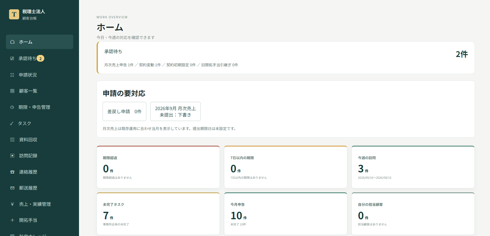
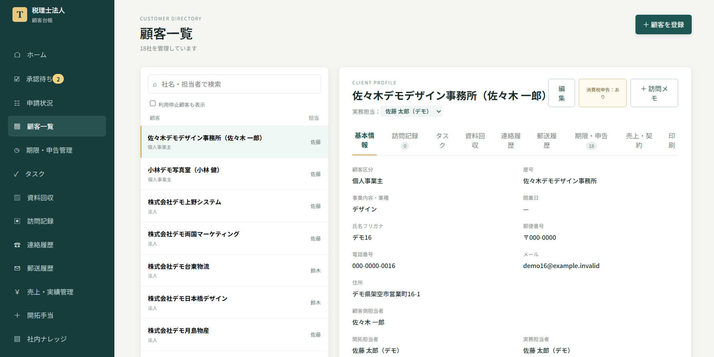
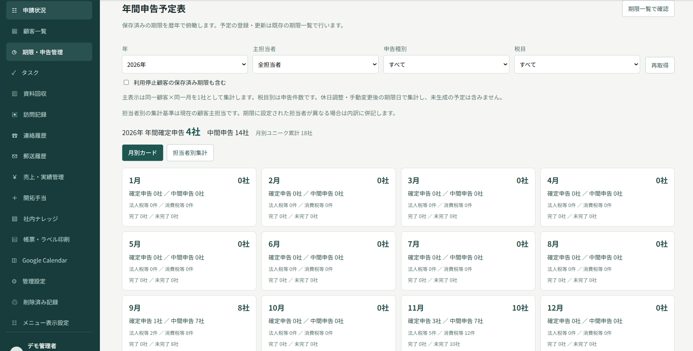
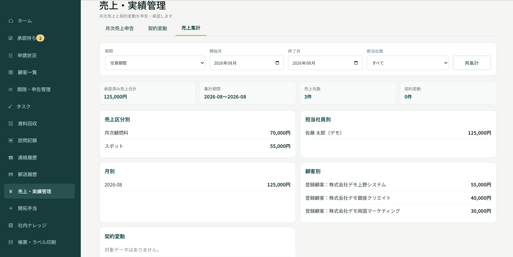

顧客管理
法人・個人事業主の基本情報、担当者、契約情報、各種履歴を顧客ごとに確認できます。
- 基本情報
- 担当者
- 契約情報
- 各種履歴
税理士事務所向け顧客・業務管理システム
デモ・導入相談受付中
顧客情報、申告期限、資料回収、訪問履歴、契約・売上まで。
税理士事務所の日々の業務を、ひとつのシステムで管理できます。
小規模〜中規模の税理士事務所・税理士法人での利用を想定しています。
顧客情報がExcelや紙などに分散している
申告期限を担当者ごとに管理している
資料の回収状況を、毎回担当者に確認している
訪問や電話の対応履歴が十分に残っていない
顧問料の変更と売上管理が別々になっている
管理者が事務所全体の進捗を把握しにくい
顧客情報を中心に、税理士事務所の日々の業務をまとめて管理します。
法人・個人事業主の基本情報、担当者、契約情報、各種履歴を顧客ごとに確認できます。
法人税・消費税・中間申告などの期限と完了状況を、担当者ごとに確認できます。
担当者別・月別に、年間の決算・申告予定を確認できます。繁忙時期や担当者ごとの業務量を見通しやすくします。
必要資料の回収状況と次の対応を、まとめて確認できます。確認待ちや対応漏れにも気づきやすくなります。
面談内容、電話対応、郵送履歴、次回訪問予定などを記録できます。担当者が変わった場合でも、これまでの対応経緯を確認できます。
顧客の詳細情報は、担当者や閲覧を許可された職員だけに制限できます。事務所内での情報共有と、閲覧範囲の管理を両立します。
契約情報をもとに売上一覧の原案を作成できます。月額顧問料、記帳代行料、決算・申告料、その他月額料金、スポット売上などを管理できます。
顧問料の変更などは、担当者の申請と管理者の承認を経て契約情報へ反映できます。
誰が、いつ、どのような変更を行ったかを履歴として確認できます。
以下は架空データのみを使用した営業デモ環境の画面です。




一般的な営業CRMをそのまま税理士事務所向けに置き換えたものではありません。申告期限、資料回収、顧問契約、決算・申告料、担当者管理、訪問記録、申請・承認など、税理士事務所の日々の実務を前提に設計しています。
事務所ごとの運用に合わせた調整についてもご相談いただけます。現在の運用やご希望を伺ったうえで、対応可能な範囲をご案内します。
基本料金は、1事務所・10名までのご利用を前提としています。
初期導入費
55,000円（税込）
初期設定・導入支援・標準的なデータ移行支援を含みます。
顧客データの移行には、OfficeKit標準テンプレートをご利用いただきます。
月額利用料
16,500円（税込）
／1事務所
1事務所・10名まで
独自帳票・個別カスタマイズ・他システムとの個別連携・大量データ移行や個別加工・10名を超える利用などは、別途お見積りします。訪問対応やCRM以外のPC・ネットワーク等のIT対応も標準料金には含まれません。
原則として、お客様側のサーバー環境への導入を想定しています。サーバー環境をお持ちでない場合の導入方法についてもご相談ください。OfficeKit側でサーバー環境を用意・管理する場合は、別途お見積りします。
顧客情報、申告期限、資料回収、契約・売上などを、担当者ごとやExcelなどで管理している小規模〜中規模の税理士事務所・税理士法人を主に想定しています。
いいえ。顧客情報を中心に、申告期限、年間予定、資料回収、タスク、訪問・連絡・郵送履歴、契約、月次売上、申請・承認までをまとめて管理できます。
事務所ごとの運用に合わせた調整についてもご相談いただけます。ご希望の内容を確認したうえで、対応可能な範囲をご案内します。
はい。架空データを使用した営業デモをご用意しています。デモをご希望の場合は、問い合わせフォームからお申し込みください。
初期導入費は55,000円（税込）、月額利用料は16,500円（税込）です。月額料金は1事務所10名までご利用いただけます。独自帳票や個別カスタマイズなどは別途お見積りします。サーバー環境をお持ちでない場合の導入方法についてもご相談ください。